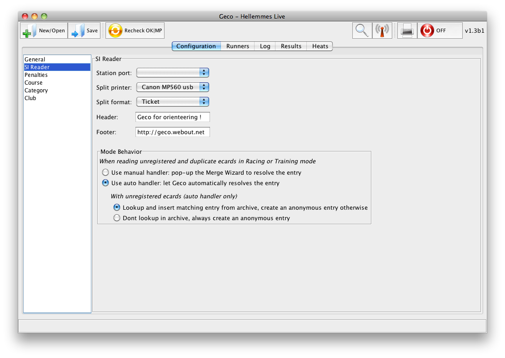

Configuration Panel
The configuration panel allows one to set up many configuration items for the stage, depending on the stage format. Configuration items are grouped by topics in the left list. Select one topic to see available options in the main pane.
 (Click to zoom in)
{kind=link}
General
- Zero hour: used for older SI cards V5 and registered start times
- Runner archive: path to archive
- CN base: path to score file for the french CN (national ranking), exported as CSV
SI Reader
- Station port: SPORTident master station must be connected before launching the app so that Geco can detect the port
- Split format: multi-columns (see
SplitNbColumnsingeco.prop) or ticket (single column, best for thermal printer) - You can customize header and footer of the split sheet with some texts
This panel also allows you to customize a bit more the behavior of Geco when reading ecards (either in racing or training modes). You can choose to:
- manually resolve ecard issues with the Merge wizard or let Geco handles all ecards automatically, creating an entry for each reading (unknown, duplicate entries)
- let Geco lookup unregistered ecards and insert entries from archive (only for the automatic behavior)
Penalties (for Orient’Show, Free Order, …)
- MP limit: number of missing punches authorized before marking the runner as MP
- Don’t check MP limit: runner can have any number of missing punches without ever being MP (disable MP limit)
- Time penalty: time penalty per missing punch, in seconds (also displayed in minutes for large time penalty)

Course
- Geco can import courses described with the IOF XML format. Click the XML button to select the course file. You can choose between the XML V2 (current) format or the new XML V3 format.
- You can Edit the course sequence by hand, if necessary
- You can Recheck all runners from a course after a change
The [Auto] course always exists in Geco: it can’t be renamed or deleted. This is the default course used by Geco for any new entry (unless a category course is used). This special course tells Geco to detect the real course on ecard reading: after reading, the runner’s course will be automatically updated with the detected course.
Category
- Course column: set the default course for runners in the category (used when importing registrations from file or from archive)
- You can import a CSV Template file describing common categories and their default courses. See
data/modelesfor some sample files following french rules. Each line describes a category asshort name, long name, course name